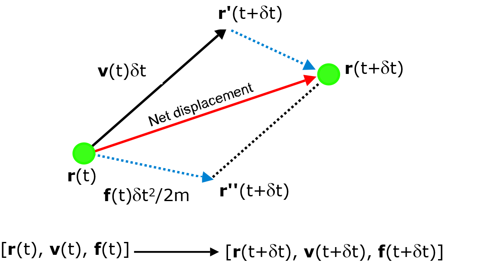
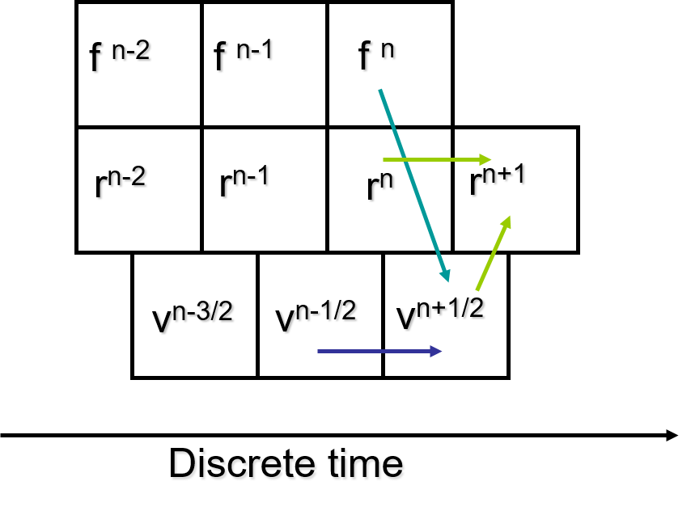

Particle Trajectories¶
Note that the classical equation of motion
is a second order differential equation where the forces are assumed to be constant over the timestep. The usual way to solve this kind of differential equation numerically is by finite difference techniques, which involve the use of a fixed timestep \(\delta t\).
The general idea is to obtain the dynamic information at a later time \(t + \delta t\) to a significant degree of accuracy, based on the given atomic positions and velocities at time \(t\). This is repeatedly solved on a step-by-step basis and the solution is then propagated through time by using this approximation. The degree of accuracy can be obtained by expanding a Taylor series about \(\vec{r}(t)\) for an atom \(I\):
where \(\vec{a}\) is the acceleration, equal to \(\frac{\vec{f}}{m}\). The diagram below illustrates the general idea for the integration of motion. Essentially, we are interested in determining the net displacement of an atom over the timestep :math:delta t` due to the force experienced by the atom, to produce a new set of dynamic information.
{kind=link}
One of the simplest and fastest methods to compute this integration is the leapfrog Verlet integration scheme. The scheme requires values of position and force at time \(t\) but the velocity at half a timestep behind, \(t - \frac{\delta t}{2}\).
First of all, the force at time \(t\) is computed. Then the velocity is advanced to \(t + \frac{\delta t}{2}\) using the kinematic equation v = u + ft/m, where m is the mass of the atom:
where the initial velocity (half a step behind) is obtained as
After that, the new position is advanced, or ‘leaps forward’, a full step ahead to \(t + \delta t\) using the half-step velocity calculated above:
However, the current velocity at time \(t\) would be needed to calculate properties such as the kinetic energy and pressure:
After that, the force at the new position will be calculated and the whole integration process is repeated. The diagram below shows a schematic illustration of the integration algorithm.
{kind=link}
Note that, although leapfrog Verlet is simple and faster than most other schemes, it is not time reversible and can become unstable over long time scales.
The use of a symplectic integrator provides time reversibility and long-term stability. One commonly-used integration scheme for MD simulations is Velocity Verlet (VV), which is second-order accurate (i.e. errors are proportional to the square of the timestep size \(\delta t\)) and updates particle positions and velocities without requiring additional memory to do so.
Starting with positions, velocities and forces all at time \(t\), the velocity for atom \(i\) is advanced to \(t + \frac{\delta t}{2}\) using the force:
before its position is advanced a full step ahead to \(t + \delta t\) using the half-step velocity calculated above:
The force at the new position will be calculated, which is then used to advance the velocity by another half step:
While this integration algorithm requires two passes through the atoms per timestep, it keeps the velocities synchronised with the positions and forces, avoiding the need to store previous values for property calculations.
Note
Older versions of DL_POLY offer VV by default, while only VV is available in DL_POLY_5. It generates trajectories in the microcanonical (NVE) ensemble in which the total energy is conserved. If this drifts or fluctuates excessively in the course of a simulation, this may mean the timestep is too large or the potential cutoffs are too small.